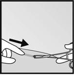

RÉSUMÉ DES CARACTÉRISTIQUES DU PRODUIT
ANSM - Mis à jour le : 04/12/2013
NEXPLANON 68 mg, implant pour usage sous-cutané
2. COMPOSITION QUALITATIVE ET QUANTITATIVE
Etonogestrel....................................................................................................................................... 68 mg
Pour un implant.
Le taux de libération de l’étonogestrel est approximativement de 60‑70 µg/jour en 5 à 6 semaines puis diminue pour atteindre approximativement 35‑45 µg/jour à la fin de la première année, environ 30‑40 µg/jour à la fin de la deuxième année et environ 25‑30 µg/jour à la fin de la troisième année. La conception de l’applicateur permet une utilisation avec une seule main et facilite une insertion sous-cutanée correcte de l’implant.
Pour la liste complète des excipients, voir rubrique 6.1.
Implant pour usage sous-cutané.
Bâtonnet flexible, souple, blanc à blanc cassé, non biodégradable, radio-opaque, de 4 cm de long et 2 mm de diamètre.
4.1. Indications thérapeutiques
La sécurité et l’efficacité ont été établies chez les femmes entre 18 et 40 ans.
4.2. Posologie et mode d'administration
1 implant, qui peut être laissé en place pendant 3 ans.
Population pédiatrique :
La sécurité et l’efficacité de Nexplanon n’ont pas été étudiées chez les adolescentes de moins de 18 ans.
Méthode d’administration :
Toute grossesse doit être exclue avant l’insertion de NEXPLANON.
Il est fortement recommandé aux professionnels de santé habilités à prescrire Nexplanon de participer à une session de formation afin de se familiariser avec l’utilisation de l’applicateur de NEXPLANON et avec les techniques d’insertion et de retrait de l’implant et si nécessaire, de demander à être supervisé lors de l’insertion ou du retrait de l’implant.
Des informations supplémentaires et des instructions plus détaillées concernant l’insertion et le retrait de l’implant seront envoyées gratuitement sur demande (MSD France, tél. 01.80.46.40.40).
Avant d’insérer l’implant, lire et suivre attentivement les instructions pour l'insertion et le retrait de l'implant dans la rubrique 4.2. « Comment insérer NEXPLANON » et « Comment retirer NEXPLANON ».
Comment utiliser NEXPLANON
NEXPLANON est un contraceptif hormonal d’action prolongée. Un seul implant est inséré en sous-cutané et il peut être laissé en place pendant trois ans. Ne pas retirer l’implant plus de trois ans après la date d’insertion. L’utilisatrice doit être informée qu’elle peut demander le retrait de l’implant à n’importe quel moment. Les professionnels de santé habilités à prescrire Nexplanon devront envisager de remplacer l’implant plus tôt chez les femmes en surpoids (voir rubrique 4.4). Après le retrait de l’implant, l’insertion immédiate d’un autre implant assurera la continuité de la protection contraceptive. Si le souhait de la femme est de ne pas continuer avec NEXPLANON, une autre méthode contraceptive doit lui être conseillée pour éviter une grossesse.
La réussite de l’utilisation et du retrait de NEXPLANON repose sur une insertion sous-cutanée de l’implant réalisée correctement et avec précaution conformément aux instructions. Si l’implant n’est pas inséré conformément aux instructions (voir rubrique 4.2. « Quand insérer NEXPLANON » et « Comment insérer NEXPLANON »), et le jour adapté, ceci peut entraîner une grossesse non désirée.
NEXPLANON doit être inséré à la face interne du bras en sous-cutané, juste sous la peau, afin d’éviter les principaux vaisseaux sanguins et nerfs qui se trouvent en profondeur dans le tissu conjonctif entre le biceps et le triceps.
Immédiatement après l’insertion, la présence de l’implant doit être vérifiée par palpation. Si l’implant ne peut pas être palpé ou s’il y a un doute sur sa présence, d’autres méthodes doivent être utilisées pour confirmer sa présence (voir rubrique 4.2. « Comment insérer NEXPLANON »). Tant que la présence de l’implant n’a pas été confirmée, il doit être conseillé à la patiente d’utiliser une méthode contraceptive non hormonale.
L’étui de NEXPLANON contient une Carte Patiente destinée à la patiente mentionnant le numéro de lot de l'implant. Il est demandé au professionnel de santé effectuant l'insertion de noter la date d'insertion, le bras où l'implant est inséré et le jour prévu du retrait sur la Carte Patiente. L’étui comprend également des étiquettes adhésives destinées au dossier médical mentionnant le numéro de lot et la date d'insertion.
Quand insérer NEXPLANON
IMPORTANT : Exclure toute grossesse avant l’insertion de l’implant.
Le moment choisi pour l’insertion dépend de la situation contraceptive récente de la femme, comme suit :
Absence préalable de contraception hormonale utilisée au cours du mois précédent
L’implant doit être inséré entre le 1er jour (premier jour des menstruations) et le 5ème jour du cycle menstruel, même si la femme saigne toujours.
Si l’insertion a lieu au moment recommandé, une contraception complémentaire n'est pas nécessaire. Si l’insertion a lieu à un autre moment que celui recommandé pour l’insertion, la patiente devra être avertie qu’elle doit utiliser une méthode contraceptive non hormonale pendant les 7 jours suivant l’insertion. Si des rapports sexuels ont déjà eu lieu, une grossesse devra être exclue.
Passage d’une méthode contraceptive à NEXPLANON
Relais d’un contraceptif hormonal combiné (ex : contraceptif oral combiné (COC), anneau vaginal ou patch transdermique)
L’implant doit être inséré de préférence le lendemain de la prise du dernier comprimé actif (le dernier comprimé contenant les substances actives) de son précédent contraceptif oral combiné ou le jour du retrait de l’anneau vaginal ou du patch transdermique. Au plus tard, l’implant doit être inséré le lendemain de l’intervalle habituel sans comprimé, sans anneau, sans patch ou de la prise de comprimés placebo de son précédent contraceptif hormonal combiné, quand la prochaine prise/insertion/application aurait du avoir lieu. Toutes les méthodes contraceptives (patch transdermique, anneau vaginal) peuvent ne pas être commercialisées dans tous les pays.
Si l’insertion a lieu au moment recommandé, une contraception complémentaire n'est pas nécessaire. Si l’insertion a lieu à un autre moment que celui recommandé pour l’insertion, la patiente devra être avertie qu’elle doit utiliser une méthode contraceptive non hormonale pendant les 7 jours suivant l’insertion. Si des rapports sexuels ont déjà eu lieu, une grossesse devra être exclue.
Relais d’une méthode purement progestative (ex : pilule progestative, injection, implant ou système intra-utérin (SIU) libérant un progestatif)
Comme plusieurs types de méthodes purement progestatives existent, l’insertion de l’implant doit se faire comme suit :
· Contraceptifs injectables : insérer l’implant le jour prévu pour l’injection suivante.
· Pilule progestative : la femme peut passer de la pilule purement progestative à NEXPLANON n’importe quel jour du mois. L’implant doit être inséré dans les 24 heures suivant la prise du dernier comprimé.
· Implant/Système intra-utérin (SIU) : insérer l’implant le jour du retrait du précédent implant ou du SIU.
Si l’insertion a lieu au moment recommandé, une contraception complémentaire n'est pas nécessaire. Si l’insertion a lieu à un autre moment que celui recommandé pour l’insertion, la patiente devra être avertie qu’elle doit utiliser une méthode contraceptive non hormonale pendant les 7 jours suivant l’insertion. Si des rapports sexuels ont déjà eu lieu, une grossesse devra être exclue.
Après un avortement ou une fausse couche
· Premier trimestre : l’implant devra être inséré dans les cinq jours suivant l’avortement ou la fausse couche du premier trimestre.
· Deuxième trimestre : insérer l’implant entre le 21ème et le 28ème jour suivant l’avortement ou la fausse couche du deuxième trimestre.
Si l’insertion a lieu au moment recommandé, une contraception complémentaire n'est pas nécessaire. Si l’insertion a lieu à un autre moment que celui recommandé pour l’insertion, la patiente devra être avertie qu’elle doit utiliser une méthode contraceptive non hormonale pendant les 7 jours suivant l’insertion. Si des rapports sexuels ont déjà eu lieu, une grossesse devra être exclue.
Post-partum
· Sans allaitement : l’implant devra être inséré entre le 21ème et le 28ème jour après l’accouchement. Si l’insertion a lieu au moment recommandé, une contraception complémentaire n'est pas nécessaire. Si l’implant est inséré plus de 28 jours après l’accouchement, la patiente devra être avertie qu’elle doit utiliser une méthode contraceptive non hormonale pendant les 7 jours suivant l’insertion. Si des rapports sexuels ont déjà eu lieu, une grossesse devra être exclue.
· Avec allaitement : l’implant devra être inséré après la 4ème semaine suivant l’accouchement (voir rubrique 4.6). La patiente devra être avertie qu’elle doit utiliser une méthode contraceptive non hormonale pendant les 7 jours suivant l’insertion. Si des rapports sexuels ont déjà eu lieu, une grossesse devra être exclue.
Comment insérer NEXPLANON
La réussite de l’utilisation et du retrait de NEXPLANON repose sur une insertion sous-cutanée de l’implant dans le bras non dominant réalisée correctement et avec précaution conformément aux instructions. Le professionnel de santé ayant effectué l'insertion ainsi que la patiente doivent être capables de palper l’implant sous la peau de la femme après insertion.
L’implant doit être inséré en sous-cutané, juste sous la peau. Si l’implant est inséré trop profondément, une lésion nerveuse ou vasculaire peut se produire. Des insertions trop profondes ou incorrectes ont été associées à une paresthésie (due à une lésion nerveuse) et à une migration de l’implant (due à une insertion dans le muscle ou dans le fascia), et dans de rares cas, à une insertion intravasculaire. De plus, lorsque l’implant est inséré trop profondément, il peut ne pas être palpable et sa localisation et/ou son retrait peuvent être difficiles.
L’insertion de NEXPLANON doit être effectuée dans des conditions d’asepsie et uniquement par un professionnel de santé habilité à prescrire Nexplanon et familiarisé avec la technique. L’insertion de l’implant doit être réalisée uniquement avec l’applicateur préchargé.
Il est recommandé que le professionnel de santé effectuant l'insertion soit assis lors de l’intégralité de la procédure d’insertion, ainsi le site d’insertion et le mouvement de l’aiguille juste sous la peau pourront être bien visibles par le côté.
|
· Demandez à la patiente de s’allonger sur le dos sur la table d’examen avec son bras non dominant plié au niveau du coude et tourné vers l’extérieur, ainsi, soit son poignet est au même niveau que son oreillle, soit sa main est placée près de son oreille (Figure 1). |
Figure 1 |
|
· Identifiez le site d’insertion, qui se situe à la face interne du bras non dominant, à environ 8 à 10 cm au‑dessus de l’épitrochlée. |
|
|
· Faites deux repères avec un marqueur stérile : un premier point, pour repérer l’endroit où l’implant sera inséré, et un second point, quelques centimètres au-dessus du premier repère (Figure 2). Ce second repère servira plus tard de guide pour la direction pendant l’insertion. |
Figure 2 |
|
· Nettoyez le site d’insertion avec une solution antiseptique. · Anesthésiez la zone d’insertion (par exemple, avec un anesthésique en spray ou en injectant 2 ml de lidocaïne à 1 % juste sous la peau le long du tunnel d’insertion prévu). · Sortez de son emballage l’applicateur NEXPLANON préchargé stérile jetable contenant l’implant. |
|
|
· Tenez l’applicateur juste au-dessus de l’aiguille au niveau de la zone striée. Retirez le capuchon protecteur transparent de l’aiguille en le faisant glisser horizontalement, dans le sens de la flèche (Figure 3). Si le capuchon ne se retire pas facilement, l’applicateur ne doit pas être utilisé. Vous pouvez voir l’implant blanc en regardant dans la pointe de l’aiguille. Ne touchez pas la manette coulissante violette avant d’avoir entièrement inséré l’aiguille sous la peau, car l’aiguille se rétracterait et libérerait l’implant de l’applicateur. |
Figure 3 |
|
· Avec votre main libre, tendez la peau autour du site d’insertion entre le pouce et l’index (Figure 4). |
Figure 4 |
|
· Piquez la peau avec la pointe de l’aiguille selon un angle de 30° environ (Figure 5). |
Figure 5 |
|
· Amenez l’applicateur en position horizontale. Tout en soulevant la peau avec la pointe de l’aiguille, introduisez l’aiguille sur toute sa longueur. Vous pouvez ressentir une légère résistance mais n’exercez pas de force excessive (Figure 6). Si l’aiguille n’est pas entièrement insérée, l’implant ne sera pas correctement inséré. |
Figure 6 |
|
· Maintenez l’applicateur dans la même position avec l’aiguille insérée sur toute sa longueur. Si nécessaire, vous pouvez utiliser votre main libre pour maintenir l’applicateur dans la même position au cours de la procédure suivante. Déverrouillez la manette coulissante violette en la poussant légèrement vers le bas. Déplacez la manette coulissante complètement en arrière jusqu’à la butée (Figure 7). L’implant est maintenant dans sa position sous-cutanée finale et l’aiguille est verrouillée dans le corps de l’applicateur. L’applicateur peut maintenant être retiré. Si l’applicateur n’est pas maintenu dans la même position au cours de la procédure ou si la manette coulissante violette n’est pas complètement tirée en arrière, l’implant ne sera pas correctement inséré.
|
Figure 7 |
|
· Vérifiez toujours la présence de l’implant dans le bras de la patiente par palpation immédiatement après l’insertion. En palpant les deux extrémités de l’implant, vous devez pouvoir confirmer la présence du bâtonnet de 4 cm (Figure 8). |
Figure 8 |
|
Si vous ne sentez pas l’implant ou doutez de sa présence: · Vérifiez l’applicateur. L’aiguille doit être complètement rétractée et seul le bout violet de l’obturateur doit être visible. · Utilisez d’autres méthodes pour confirmer sa présence. Les méthodes adaptées sont : la radiographie bidimensionnelle, la tomodensitométrie (TDM), l’échographie avec sonde linéaire à haute fréquence (10 MHz ou plus) ou l’imagerie par résonance magnétique (IRM). Avant d’effectuer une TDM, une échographie ou une IRM pour localiser l’implant, il est recommandé de contacter MSD France pour connaître les instructions. En cas d’échecs de ces méthodes d’imagerie, il est recommandé de vérifier la présence de l’implant en mesurant le taux d’étonogestrel dans un échantillon de sang de la patiente. Dans ce cas, MSD France vous communiquera la procédure appropriée. Une méthode contraceptive non hormonale doit être utilisée tant que la présence de l’implant n’est pas confirmée. |
|
|
· Appliquez un petit pansement adhésif sur le site d’insertion. Demandez à la patiente de palper elle-même l’implant. · Appliquez une compresse stérile avec un bandage compressif pour minimiser le risque d’ecchymose. La patiente peut retirer le bandage compressif au bout de 24 heures et le petit pansement au bout de 3 à 5 jours. |
|
|
· Complétez la Carte Patiente et remettez-la à la patiente en lui demandant de la conserver. Complétez également les étiquettes adhésives et collez-la dans le dossier médical de la patiente. |
|
|
· L’applicateur est à usage unique et doit être correctement éliminé, conformément aux réglementations nationales d’élimination des déchets biologiques. |
|
Comment retirer NEXPLANON
Avant de débuter la procédure de retrait, le professionnel de santé effectuant le retrait doit consulter la Carte Patiente pour localiser l’implant NEXPLANON. Vérifiez la localisation exacte de l’implant dans le bras par palpation.
Si l’implant n’est pas palpable, une radiographie bidimensionnelle peut être réalisée afin de vérifier sa présence. Un implant non-palpable doit toujours être localisé avant le retrait. Les méthodes adaptées pour la localisation comprennent la tomodensitométrie (TDM), l’échographie avec sonde linéaire à haute fréquence (10 MHz ou plus) ou l’imagerie par résonance magnétique (IRM). En cas d’échecs de ces méthodes d’imagerie pour localiser l’implant, un dosage de l’étonogestrel peut être pratiqué afin de vérifier la présence de l’implant. Veuillez contacter MSD France pour plus de conseils.
Après localisation d’un implant non-palpable, envisagez d’effectuer le retrait sous guidage échographique.
Quelques cas de migration de l’implant ont été rapportés ; elle consiste normalement en un déplacement mineur par rapport à la position d’origine à moins d’une insertion trop profonde (voir rubrique 4.4.). Cela peut compliquer la localisation de l’implant par palpation, échographie et/ou IRM, et le retrait peut nécessiter une incision plus large et plus de temps.
Le retrait de l’implant doit uniquement être effectué dans des conditions d’asepsie et par un professionnel de santé habilité à prescrire Nexplanon et familiarisé avec la technique.
La chirurgie exploratrice sans connaître la localisation exacte de l’implant est fortement déconseillée.
Le retrait d’implants insérés trop profondément doit être réalisé avec prudence afin d’éviter d’endommager les structures nerveuses ou vasculaires profondes du bras et doit être effectué par des médecins familiarisés avec l’anatomie du bras.
Si l’implant ne peut être retiré, veuillez contacter MSD France pour plus de conseils.
|
· Nettoyez la zone où l’incision sera réalisée et appliquez un antiseptique. Localisez l’implant par palpation et marquez l’extrémité distale (l’extrémité la plus proche du coude), par exemple, avec un marqueur stérile (Figure 9). |
Figure 9 |
|||
|
· Anesthésiez le bras, par exemple, avec 0,5 à 1 ml de lidocaïne à 1 % au niveau du repère indiquant l’endroit de l’incision (Figure 10). Veillez à injecter l’anesthésique local sous l’implant pour qu’il reste près de la surface de la peau. |
Figure 10 |
|||
|
· Appuyez sur l’extrémité proximale de l’implant (Figure 11) pour l’immobiliser ; un renflement indiquant l’extrémité distale de l’implant peut apparaître. En partant de l’extrémité distale de l’implant, faire une incision longitudinale de 2 mm vers le coude. |
Figure 11 |
|||
|
· Poussez doucement l’implant vers l’incision jusqu’à ce que l’extrémité soit visible. Saisissez l’implant avec une pince (de préférence une pince mosquito courbe) et retirez l’implant (Figure 12). |
 Figure 12 |
|||
|
· Si l’implant est encapsulé, pratiquez une incision dans la gaine tissulaire et ensuite retirez l’implant avec une pince (Figures 13 et 14). |
||||
|
Figure 13 |
Figure 14 |
|||
|
· Si l’extrémité de l’implant n’est pas visible au niveau de l’incision, insérez doucement une pince dans l’incision (Figure 15). Tournez la pince avec votre autre main (Figure 16). Avec une seconde pince, disséquez soigneusement le tissu autour de l’implant et saisissez l’implant (Figure 17). L’implant peut alors être retiré. |
||||
|
Figure 15 |
Figure 16 |
Figure 17 |
||
|
· Vérifiez que la totalité du bâtonnet, qui mesure 4 cm de long, a été retiré en le mesurant. Si un implant incomplet (moins de 4 cm) est retiré, le morceau restant devra être retiré en suivant les instructions de cette rubrique. · Si la femme souhaite continuer à utiliser NEXPLANON, un nouvel implant peut être inséré immédiatement après le retrait du précédent implant en utilisant la même incision (voir rubrique 4.2 « Comment remplacer NEXPLANON »). |
||||
|
· Après avoir retiré l’implant, fermez l’incision avec une suture cutanée adhésive et appliquez un pansement adhésif. |
||||
|
· Appliquez une compresse stérile avec un bandage compressif pour minimiser le risque d’ecchymose. La patiente peut retirer le bandage compressif au bout de 24 heures et le petit pansement au bout de 3 à 5 jours. |
||||
Comment remplacer NEXPLANON
Un remplacement immédiat peut être réalisé après le retrait du précédent implant et la procédure est semblable à la procédure d’insertion décrite dans la rubrique 4.2 « Comment insérer NEXPLANON ».
Le nouvel implant peut être inséré dans le même bras et par l’incision effectuée pour retirer le précédent implant. Si la même incision est utilisée pour insérer le nouvel implant, anesthésiez le site d’insertion en injectant un anesthésique, par exemple 2 ml de lidocaïne à 1%, juste sous la peau à partir de l’incision de retrait et le long du « canal d’insertion » et suivez les étapes suivantes des instructions d’insertion.
· Accident thromboembolique veineux évolutif.
· Tumeurs malignes, connues ou suspectées, sensibles aux stéroïdes sexuels.
· Présence ou antécédent de tumeurs du foie (bénigne ou maligne).
· Présence ou antécédent d’affection hépatique sévère tant que les paramètres de la fonction hépatique ne se sont pas normalisés.
· Hémorragies génitales non diagnostiquées.
· Hypersensibilité à la substance active ou à l’un des excipients listés à la rubrique 6.1.
4.4. Mises en garde spéciales et précautions d'emploi
Cancer du sein :
Le risque de cancer du sein augmente généralement avec l’âge. Pendant l’utilisation de contraceptifs oraux (combinés) [CO], le risque de diagnostic d’un cancer du sein est légèrement augmenté. L’augmentation de ce risque disparaît progressivement au cours des 10 ans suivant l’arrêt de l’utilisation de CO et n’est pas liée à la durée d’utilisation, mais à l’âge de la femme au moment de l’utilisation du CO. Le nombre attendu de cas diagnostiqués pour 10 000 femmes qui utilisent des CO combinés (jusqu’à 10 ans après l’arrêt) comparativement à celles ne les ayant jamais utilisés pendant la même période a été calculé pour les groupes d’âge respectifs comme étant : 4,5/4 (16‑19 ans), 17,5/16 (20‑24 ans), 48,7/44 (25‑29 ans), 110/100 (30‑34 ans), 180/160 (35‑39 ans) et 260/230 (40‑44 ans). Le risque chez les utilisatrices de méthodes contraceptives uniquement progestatives est peut-être du même ordre que celui associé aux CO combinés. Cependant, pour ces méthodes, la preuve est moins concluante. Comparativement au risque de cancer du sein au cours d’une vie, l’augmentation du risque associé aux CO est faible. Les cas de cancers du sein diagnostiqués chez les utilisatrices de CO tendent à être moins avancés que chez les non‑utilisatrices de CO. L’augmentation du risque observé chez les utilisatrices de CO peut être liée à un diagnostic plus précoce, aux effets biologiques des CO ou à l’association des deux.
Troubles hépatiques :
En cas de troubles hépatiques aigus ou chroniques, la femme doit être adressée à un spécialiste pour examen et conseils.
Evènements thrombotiques et vasculaires :
Des études épidémiologiques ont associé l’utilisation des CO combinés à une augmentation de l’incidence d’accidents thromboemboliques veineux (maladie thromboembolique veineuse, thrombose veineuse profonde et embolie pulmonaire). Bien que la pertinence clinique de ce résultat pour l’étonogestrel (le métabolite actif du désogestrel) utilisé comme contraceptif en l’absence d’un composant estrogénique ne soit pas connue, l’implant doit être retiré en cas de thrombose. Le retrait de l’implant doit aussi être considéré en cas d’immobilisation à long terme liée à une intervention chirurgicale ou à une maladie. Bien que NEXPLANON soit un contraceptif purement progestatif, il est recommandé d’évaluer les facteurs de risque connus pour augmenter le risque d’accidents thromboemboliques veineux et artériels. Les femmes ayant des antécédents d’accidents thromboemboliques doivent être averties de la possibilité d’une récidive.
Pression artérielle élevée :
Si une hypertension artérielle prolongée se développe pendant l’utilisation de NEXPLANON, ou si une augmentation significative de la pression artérielle ne répond pas convenablement à une thérapeutique antihypertensive, l’utilisation de NEXPLANON doit être arrêtée.
Effet sur le métabolisme des glucides :
L’utilisation de contraceptifs contenant des progestatifs peut avoir un effet sur la résistance périphérique à l’insuline et sur la tolérance au glucose. Par conséquent, les femmes diabétiques doivent être attentivement suivies au cours des premiers mois d’utilisation de NEXPLANON.
Chloasma :
Un chloasma peut occasionnellement apparaître, notamment chez les femmes ayant des antécédents de chloasma gravidique. Les femmes ayant des prédispositions au chloasma doivent éviter de s’exposer au soleil ou aux ultraviolets au cours de l’utilisation de NEXPLANON.
Poids corporel :
L’effet contraceptif de NEXPLANON est lié aux concentrations plasmatiques d’étonogestrel, qui sont inversement proportionnelles au poids corporel, et qui diminuent avec le temps après l’insertion. L’expérience clinique chez les femmes en surpoids au cours de la 3ème année d’utilisation est limitée. Il ne peut donc être exclu que l’effet contraceptif chez ces femmes au cours de la 3ème année d’utilisation puisse être inférieur à celui observé chez les femmes de poids normal. Les professionnels de santé habilités à prescrire Nexplanon doivent donc envisager de remplacer plus tôt l’implant chez les femmes en surpoids.
Complications d’insertion :
Dans de rares cas, pour la plupart liés à une insertion trop profonde (voir rubrique 4.2 « Comment insérer NEXPLANON ») et/ou à des pressions extérieures (ex : manipulation de l’implant ou sports de contact), l’implant peut migrer de son site d’insertion. Dans ces cas, la localisation de l’implant peut être rendue plus difficile et le retrait peut nécessiter une incision plus large (voir rubrique 4.2 « Comment retirer NEXPLANON »). Si l’implant n’est pas retiré, son effet contraceptif et le risque d’effets indésirables liés au progestatif pourront persister au delà de la durée désirée par la femme.
Une expulsion peut survenir en particulier si l’implant n’a pas été inséré conformément aux instructions données à la rubrique 4.2 « Comment insérer NEXPLANON », ou à la suite d’une réaction inflammatoire locale.
Kystes ovariens :
Avec tous les contraceptifs hormonaux faiblement dosés, le développement folliculaire persiste et occasionnellement un follicule peut continuer à croître dépassant la taille qu’il atteindrait au cours d’un cycle normal. En général, ces follicules hypertrophiés disparaissent spontanément. Ils sont souvent asymptomatiques ; dans certains cas, ils sont associés à de légères douleurs abdominales. Ils nécessitent rarement une intervention chirurgicale.
Grossesses extra-utérines :
Avec les pilules uniquement progestatives traditionnelles, la protection vis-à-vis des grossesses extra‑utérines n’est pas aussi bonne qu’avec les CO combinés, en raison de la survenue fréquente d’ovulations au cours de leur utilisation. Bien que NEXPLANON inhibe systématiquement l’ovulation, une grossesse extra‑utérine doit être envisagée au cours d’un diagnostic différentiel si la femme présente une aménorrhée ou des douleurs abdominales.
Autres événements :
Les événements suivants ont été rapportés à la fois lors d’une grossesse et lors de l’utilisation de stéroïdes sexuels, mais l’imputabilité de ces manifestations à l’utilisation de progestatifs n’a pas été démontrée : ictère et/ou prurit lié à une cholestase ; formation de lithiase biliaire ; porphyrie ; lupus érythémateux disséminé ; syndrome hémolytique et urémique ; chorée de Sydenham ; herpès gestationnel ; perte d’audition liée à une otosclérose et angiœdème (héréditaire).
Examen / consultation médical(e)
Avant l’insertion ou la réinsertion de NEXPLANON, un interrogatoire médical complet (incluant les antécédents médicaux familiaux) doit être fait et une grossesse doit être exclue. La pression artérielle doit être mesurée et un examen physique doit être réalisé, avec recherche des contre-indications (voir rubrique 4.3) et des mises en garde (voir rubrique 4.4). Il est recommandé que la femme revienne pour un contrôle médical trois mois après l’insertion de NEXPLANON. Au cours de ce contrôle, le professionnel de santé devra mesurer la pression artérielle et vérifier si la femme a des questions, des plaintes ou si des effets indésirables sont apparus. La fréquence et la nature des examens médicaux réguliers futurs doivent être adaptées à chaque femme, en fonction de l’avis médical.
Les femmes seront informées que NEXPLANON ne protège pas du VIH (SIDA) ni des autres infections sexuellement transmissibles.
Diminution de l’efficacité
L’efficacité de NEXPLANON peut être réduite en cas de traitement concomitant (voir rubrique 4.5).
Changements du profil de saignement vaginal
Pendant l’utilisation de NEXPLANON, il est probable que les femmes observent des changements de leur profil de saignement vaginal qui seront imprédictibles. Ceux-ci peuvent inclure l’apparition de saignements vaginaux irréguliers (absents, moins fréquents, plus fréquents ou continus) et des changements de l’intensité des saignements (réduits ou augmentés) ou de leur durée. Des aménorrhées ont été rapportées chez environ 1 femme sur 5 tandis que chez d’autres femmes (1 femme sur 5), il a été rapporté des saignements fréquents et/ou prolongés. Chez beaucoup de femmes, le profil de saignement observé au cours des trois premiers mois est généralement prédictif du futur profil de saignement.
Une information, des conseils et l’utilisation d’un calendrier des saignements peuvent améliorer l’adhésion de la femme à son profil de saignement. L’évaluation des saignements vaginaux doit être faite au cas par cas et peut inclure un examen visant à éliminer une pathologie gynécologique ou une grossesse.
4.5. Interactions avec d'autres médicaments et autres formes d'interactions
Influence des autres médicaments sur NEXPLANON
Les interactions entre les contraceptifs hormonaux et les autres médicaments peuvent conduire à des hémorragies de privation et/ou à un échec de l’effet contraceptif. Les interactions suivantes ont été rapportées dans la littérature (principalement avec les contraceptifs combinés mais occasionnellement aussi avec les contraceptifs purement progestatifs).
Métabolisme hépatique
Les interactions peuvent se produire avec des médicaments qui induisent des enzymes hépatiques, en particulier les enzymes du cytochrome P450, lesquelles peuvent conduire à une augmentation de la clairance des hormones sexuelles (ex : phénytoïne, phénobarbital, primidone, carbamazépine, rifampicine, et les traitements anti-VIH (ex : ritonavir, nelfinavir, névirapine, éfavirenz) et aussi oxcarbazépine, topiramate, felbamate, griséofulvine et les produits à base de plantes contenant du millepertuis).
Prise en charge
Les femmes traitées avec l’un des médicaments mentionnés ci-dessus doivent utiliser une méthode contraceptive non hormonale en complément de NEXPLANON. Avec des inducteurs des enzymes hépatiques, la méthode contraceptive non hormonale doit être utilisée pendant la durée du traitement concomitant et pendant 28 jours après l’arrêt de celui-ci.
Chez les femmes traitées à long terme avec des inducteurs enzymatiques hépatiques, il est recommandé de retirer l’implant et de conseiller une méthode contraceptive qui ne soit pas modifiée par des interactions médicamenteuses.
Augmentation des taux plasmatiques hormonaux liés à une administration concomitante de médicaments
Les médicaments (ex : kétoconazole) inhibiteurs des enzymes hépatiques, comme le CYP3A4, peuvent augmenter les taux plasmatiques hormonaux.
Influence de NEXPLANON sur les autres médicaments
Les contraceptifs hormonaux peuvent modifier le métabolisme d’autres médicaments. Par conséquent, les concentrations plasmatiques et tissulaires peuvent être soit augmentées (ex : ciclosporine), soit diminuées (ex : lamotrigine).
Tests biologiques
Les données obtenues avec les CO combinés ont montré que les stéroïdes contraceptifs peuvent influencer les résultats de certains tests biologiques, dont les paramètres biochimiques hépatiques, thyroïdiens, surrénaliens et rénaux, les taux sériques de protéines (porteuses), comme la globuline se liant aux corticostéroïdes (corticosteroid binding globulin) et les fractions lipidiques/lipoprotéiniques, les paramètres du métabolisme des hydrates de carbone et les paramètres de la coagulation et de la fibrinolyse. Les modifications restent généralement dans les valeurs normales. Il n’est pas établi si ceci s’applique aussi aux contraceptifs purement progestatifs.
NEXPLANON n’est pas indiqué pendant la grossesse. Si une grossesse survient au cours de l’utilisation de NEXPLANON, l’implant doit être retiré. Les études chez l’animal ont montré que des doses très élevées de substances progestatives peuvent causer une masculinisation des fœtus féminins. De vastes études épidémiologiques n’ont mis en évidence ni d’augmentation du risque de malformations chez les enfants nés de femmes ayant utilisé des CO avant leur grossesse, ni d’effet tératogène lors de l’utilisation de CO par inadvertance au cours de la grossesse. Bien que cela soit probablement le cas pour tous les CO, il n’est pas démontré qu’il en soit de même pour NEXPLANON.
Les données de pharmacovigilance de différents médicaments contenant de l’étonogestrel et du désogestrel (l’étonogestrel est un métabolite du désogestrel) n’indiquent pas non plus de risque augmenté.
Des données cliniques indiquent que NEXPLANON ne modifie pas la production ou la qualité (concentrations en protéines, lactose ou lipides) du lait maternel. Cependant, de faibles quantités d’étonogestrel sont excrétées dans le lait maternel. En se basant sur une ingestion moyenne quotidienne de lait de 150 ml/kg, la dose moyenne d’étonogestrel reçue par l’enfant est estimée à 27 ng/kg/jour après un mois. Ceci correspond approximativement à 2,2 % de la dose quotidienne maternelle moyenne ajustée au poids et approximativement à 0,2 % de la dose maternelle quotidienne estimée en valeur absolue. Par la suite, la concentration en étonogestrel dans le lait diminue avec le temps pendant la période d’allaitement.
Des données à long terme, limitées, sont disponibles chez 38 enfants, dont les mères ont commencé à utiliser l’implant entre la 4ème et la 8ème semaine après l’accouchement. Ils ont été allaités pendant une période moyenne de 14 mois et un suivi a été effectué jusqu’à l’âge de 36 mois. L’évaluation de la croissance, du développement physique et psychomoteur n’a montré aucune différence par rapport aux enfants allaités dont les mères avaient un DIU (n = 33). Néanmoins, le développement et la croissance de l’enfant devront être suivis avec précaution. En se basant sur les données disponibles, NEXPLANON peut être utilisé pendant l’allaitement et doit être inséré après la 4ème semaine suivant l’accouchement.
4.7. Effets sur l'aptitude à conduire des véhicules et à utiliser des machines
Les effets indésirables rapportés au cours des essais cliniques et possiblement liés à l’utilisation de NEXPLANON ont été listés dans le tableau ci-dessous :
|
Classe de systèmes d’organes |
Réactions indésirables en terme MedDRA1 |
||
|
Très fréquent (≥1/10) |
Fréquent (≥1/100 à <1/10) |
Peu fréquent (≥1/1000 à <1/100) |
|
|
Infections et infestations |
Infection vaginale |
|
Pharyngite, rhinite, infection des voies urinaires |
|
Affections du système immunitaire |
|
|
Hypersensibilité |
|
Affections du métabolisme et de la nutrition |
|
Augmentation de l’appétit |
|
|
Affections psychiatriques |
|
Instabilité émotionnelle, humeur dépressive, nervosité, diminution de la libido |
Anxiété, insomnie |
|
Affections du système nerveux |
Céphalées |
Etourdissements |
Migraine, somnolence |
|
Affections vasculaires |
|
Bouffées de chaleur |
|
|
Affections gastro‑intestinales |
|
Douleur abdominale, nausée, flatulences |
Vomissements, constipation, diarrhée |
|
Affections de la peau et du tissu sous-cutané |
Acné |
Alopécie |
Hypertrichose, rash, prurit |
|
Affections musculo‑squelettiques et systémiques |
|
|
Dorsalgies, arthralgies, myalgies, douleurs musculo-squelettiques |
|
Affections du rein et des voies urinaires |
|
|
Dysurie |
|
Affections des organes de reproduction et du sein |
Tensions mammaires, mastodynie, règles irrégulières |
Dysménorrhée, kyste ovarien |
Pertes vaginales, gêne vulvovaginale, galactorrhée, augmentation du volume des seins, prurit génital |
|
Troubles généraux et anomalies au site d’administration |
|
Douleur au site d’insertion, réaction au site d’insertion, fatigue, symptômes pseudo‑grippaux, douleur |
Pyrexie, œdème |
|
Investigations |
Prise de poids |
Perte de poids |
|
1 les termes MedDRA (version 10.1) les plus appropriés pour décrire certaines réactions indésirables ont été repris. Les synonymes et les conditions apparentées ne sont pas mentionnés mais doivent aussi être pris en compte.
Au cours de la surveillance post-commercialisation, une augmentation de la pression artérielle cliniquement significative a été observée dans de rares cas. Des cas de séborrhée ont aussi été rapportés. Des réactions anaphylactiques, une urticaire, un angio-œdème, une aggravation d'un angio‑œdème et/ou une aggravation d’un œdème angioneurotique héréditaire peuvent survenir. L’insertion et/ou le retrait de l’implant peuvent entraîner des ecchymoses, une légère irritation locale, des douleurs ou des démangeaisons. Une fibrose au site d'insertion peut se produire, une cicatrice peut se former ou un abcès peut se développer. Des paresthésies ou des sensations pseudo‑paresthésiques peuvent survenir. Une expulsion ou une migration de l’implant est possible (voir rubrique 4.4). Si les instructions ne sont pas suivies (voir rubrique 4.2), des insertions incorrectes, des difficultés de localisation et de retrait de l’implant peuvent se produire. Une intervention chirurgicale peut être nécessaire pour le retrait de l’implant.
Dans de rare cas, des grossesses extra-utérines ont été rapportées (voir rubrique 4.4).
Chez les femmes utilisant des contraceptifs (oraux combinés), un certain nombre d’effets indésirables (graves) ont été rapportés. Ils comprennent : des accidents thromboemboliques veineux, des accidents thromboemboliques artériels, des tumeurs hormono‑dépendantes (ex : tumeurs hépatiques, cancer du sein) et des chloasmas, plusieurs d’entre eux sont détaillés dans la rubrique 4.4.
Déclaration des effets indésirables suspectés
La déclaration des effets indésirables suspectés après autorisation du médicament est importante. Elle permet une surveillance continue du rapport bénéfice/risque du médicament. Les professionnels de santé déclarent tout effet indésirable suspecté via le système national de déclaration : Agence nationale de sécurité du médicament et des produits de santé (Ansm) et réseau des Centres Régionaux de Pharmacovigilance - Site internet : www.ansm.sante.fr
5. PROPRIETES PHARMACOLOGIQUES
5.1. Propriétés pharmacodynamiques
Mécanisme d’action
L’implant NEXPLANON est un implant non biodégradable, radio-opaque, contenant de l’étonogestrel destiné à un usage sous-cutané, préchargé dans un applicateur stérile, jetable. L’étonogestrel est le métabolite biologiquement actif du désogestrel, un progestatif largement utilisé dans les CO. Sa structure est dérivée de la 19‑nortestostérone et il se lie avec une haute affinité aux récepteurs de la progestérone dans les organes cibles. L’effet contraceptif de l’étonogestrel est principalement dû à une inhibition de l’ovulation. Il n’a pas été observé d’ovulation durant les deux premières années d’utilisation de l’implant et rarement durant la troisième année. En plus de l’inhibition de l’ovulation, l’étonogestrel entraîne aussi des modifications de la glaire cervicale, qui gênent le passage des spermatozoïdes.
Efficacité et sécurité d’emploi
Les essais cliniques ont été conduits chez des femmes entre 18 et 40 ans. Bien qu’aucune comparaison directe n’ait été faite, l’efficacité contraceptive est au moins comparable à celle des CO combinés. Lors des études cliniques, aucune grossesse n’a été observé pour les 35 057 cycles d’exposition ; l’indice de Pearl étudié est de 0,00 (intervalle de confiance à 95 % : 0,00 – 0,14). Cependant, il faut savoir qu’en pratique aucune méthode ne peut être considérée comme efficace à 100 %. Ce taux élevé d’efficacité contraceptive est obtenu, entre autre, parce que l’action contraceptive de NEXPLANON est indépendante de l’observance d’un traitement par la femme elle-même. L’action contraceptive de l’étonogestrel est réversible, ce qui se manifeste par un retour rapide à un cycle menstruel normal après le retrait de l’implant. Bien que l’étonogestrel inhibe l’ovulation, l’activité ovarienne n’est pas complètement supprimée. Les concentrations moyennes en estradiol restent supérieures au taux observé en phase folliculaire précoce. Dans une étude sur 2 ans, au cours de laquelle la densité minérale osseuse de 44 utilisatrices a été comparée à celle d’un groupe témoin de 29 femmes utilisant un DIU, aucun effet indésirable relatif à la masse osseuse n’a été observé. Aucun effet cliniquement significatif sur le métabolisme des lipides n’a été observé. L’utilisation de contraceptifs contenant un progestatif peut avoir un effet sur la résistance à l’insuline et la tolérance au glucose. Des essais cliniques additionnels ont indiqué que les utilisatrices de NEXPLANON auraient souvent des menstruations moins douloureuses (dysménorrhées).
5.2. Propriétés pharmacocinétiques
Après l’insertion de l’implant, l’étonogestrel est rapidement absorbé dans la circulation. Les concentrations permettant l’inhibition de l’ovulation sont atteintes en 1 jour. Les concentrations sériques maximales (entre 472 et 1270 pg/ml) sont atteintes en 1 à 13 jours. Le taux de libération de l’implant diminue avec le temps. En conséquence, les concentrations sériques diminuent rapidement au cours des premiers mois. A la fin de la première année, une concentration moyenne d’approximativement 200 pg/ml (entre 150‑261 pg/ml) est observée, celle-ci diminue lentement jusqu’à 156 pg/ml (entre 111‑202 pg/ml) à la fin de la troisième année. Les variations observées dans les concentrations sériques peuvent être, en partie, attribuées aux différences de poids corporel.
Distribution
L’étonogestrel est lié à 95,5‑99 % aux protéines sériques, principalement à l’albumine et avec une importance moindre à la protéine porteuse des stéroïdes sexuels (SHBG). Le volume central de distribution et le volume total de distribution sont respectivement de 27 L et de 220 L, et ils ne se modifient quasiment pas au cours de l’utilisation de NEXPLANON.
Biotransformation
L’étonogestrel subit une hydroxylation et une réduction. Les métabolites sont conjugués aux sulfates et aux glucuronides. Des études sur l’animal montrent que la circulation entérohépatique ne contribue probablement pas à l’activité progestative de l’étonogestrel.
Elimination
Après une administration intraveineuse d’étonogestrel, la demi‑vie d’élimination moyenne est approximativement de 25 heures et la clairance sérique est approximativement de 7,5 L/heure. La clairance et la demi‑vie d’élimination restent constantes pendant la période de traitement. L’excrétion de l’étonogestrel et de ses métabolites, sous forme de stéroïdes libres ou sous forme conjuguée, est urinaire ou fécale (avec un ratio de 1,5/1). Après insertion chez une femme qui allaite, l’étonogestrel est excrété dans le lait maternel avec un ratio lait/sérum de 0,44/0,50 au cours des quatre premiers mois. Chez la femme qui allaite, la dose moyenne d’étonogestrel ingérée par l’enfant est d’environ 0,2 % de la dose maternelle quotidienne estimée en valeur absolue (2,2 % lorsque les valeurs sont normalisées par kg de poids corporel). Les concentrations diminuent de façon progressive et statistiquement significative au cours du temps.
5.3. Données de sécurité préclinique
Noyau : copolymère éthylène / acétate de vinyle (28% d’acétate de vinyle, 43 mg)
sulfate de baryum (15 mg)
stéarate de magnésium (0,1 mg).
Enveloppe : copolymère éthylène / acétate de vinyle (15% d’acétate de vinyle, 15 mg).
NEXPLANON ne doit pas être inséré après la date de péremption mentionnée sur le conditionnement extérieur.
6.4. Précautions particulières de conservation
A conserver dans le conditionnement primaire d’origine.
6.5. Nature et contenu de l'emballage extérieur
L’étui contient un implant (4 cm de long et 2 mm de diamètre) qui est préchargé dans l’aiguille en acier inoxydable d’un applicateur stérile, prêt à l’emploi, jetable. L’applicateur contenant l’implant est conditionné sous plaquette thermoformée en polyéthylène téréphtalate glycol (PETG) transparent scellée avec un opercule en polyéthylène haute densité (PEHD). Le contenu de la plaquette thermoformée est stérile à moins que le conditionnement soit endommagé ou ouvert.
6.6. Précautions particulières d’élimination et de manipulation
L’applicateur est à usage unique.
Tout médicament non utilisé ou déchet doit être éliminé conformément à la réglementation en vigueur.
7. TITULAIRE DE L’AUTORISATION DE MISE SUR LE MARCHE
MSD France
34, AVENUE LEONARD DE VINCI
92400 COURBEVOIE
8. NUMERO(S) D’AUTORISATION DE MISE SUR LE MARCHE
9. DATE DE PREMIERE AUTORISATION/DE RENOUVELLEMENT DE L’AUTORISATION
Date de première autorisation : 25 mai 1999
Date du dernier renouvellement de l’autorisation : 28 août 2008
10. DATE DE MISE A JOUR DU TEXTE
12. INSTRUCTIONS POUR LA PREPARATION DES RADIOPHARMACEUTIQUES
Sans objet.
Liste I.